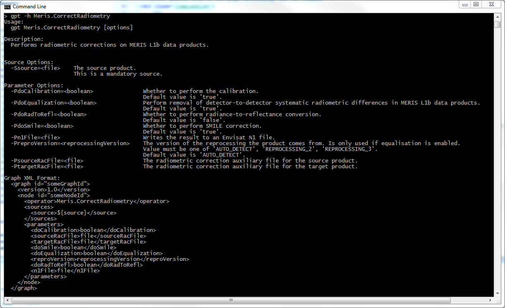

| MERIS Level 1 Radiometry Processor - Command Line Description |
|

If MERIS N1 products shall be written as output result a graph xml file has to be created. This xml file should concatenate the Meris.CorrectRadiometry operator and the N1Patcher operator. A possible graph xml file would look like the following. For demonstration purpose only the necessary parameter have been set.
<graph id="RadiometryCorrectionN1">
<version>1.0</version>
<node id="radiometry">
<operator>Meris.CorrectRadiometry</operator>
<sources>
<source>${n1Product}</source>
</sources>
</node>
<node id="n1Writer">
<operator>N1Patcher</operator>
<sources>
<n1>${n1Product}</n1>
<input>radiometry</input>
</sources>
<parameters>
<patchedFile>${n1TargetFile}</patchedFile>
</parameters>
</node>
</graph>
This graph can be invoked by the following call on the command line:
gpt <graph-file.xml> -Pn1TargetFile=<path-to-target-file> -Sn1Product=<path-to-source-file>